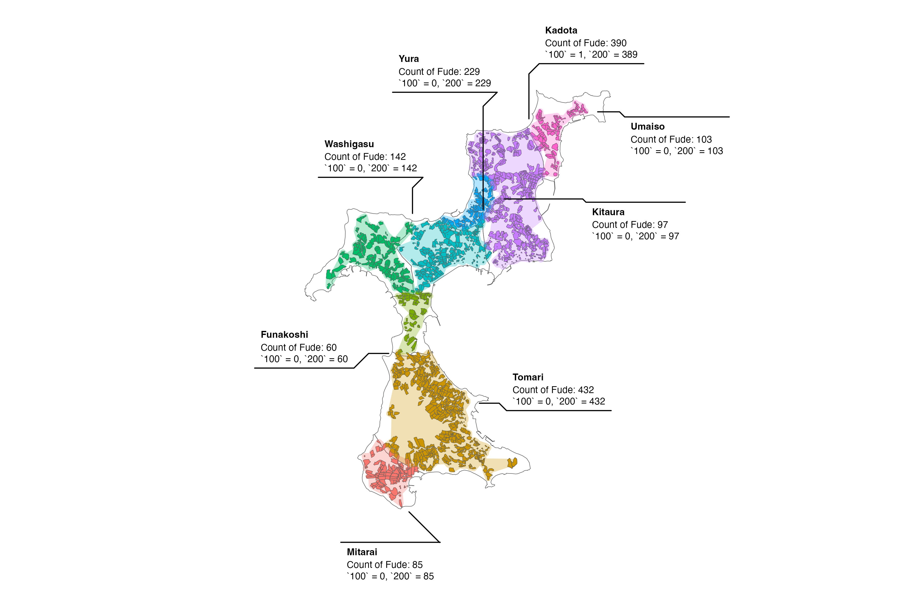
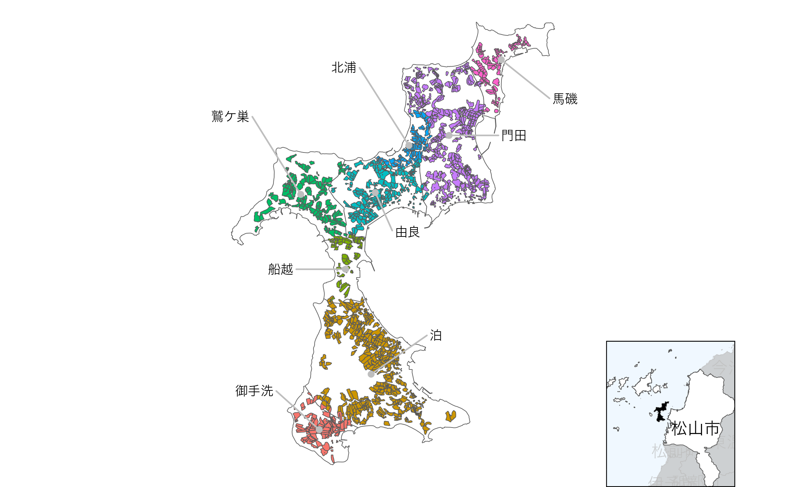

Using ggforce Package
library(dplyr)
library(sf)
library(ggplot2)
library(ggforce)
db <- combine_fude(d, b, city = "松山市", old_village = "興居島", community = "^(?!釣島).*")
bbox <- sf::st_bbox(db$fude)
ggplot() +
geom_sf(data = db$community, fill = NA) +
geom_sf(data = db$fude, aes(fill = RCOM_ROMAJI)) +
geom_mark_hull(data = db$fude |>
group_by(RCOM) |>
mutate(n = gsub("c\\(|\\)", "",
paste0("Count of Fude: ", n(), "\n",
list(table(land_type))))),
aes(x = point_lng, y = point_lat,
fill = RCOM_ROMAJI,
label = RCOM_ROMAJI,
description = n),
colour = NA,
expand = unit(1, "mm"),
radius = unit(1, "mm"),
label.fontsize = 9,
label.family = "Helvetica",
label.fill = "white",
label.colour = "black",
# label.buffer = unit(0, "pt"),
con.colour = "black") +
coord_sf(xlim = c(bbox["xmin"] - 0.02, bbox["xmax"] + 0.02),
ylim = c(bbox["ymin"] - 0.01, bbox["ymax"] + 0.01)) +
theme_void() +
theme(legend.position = "none")
Source: Created by processing the Ministry of Agriculture, Forestry and Fisheries, ‘Fude Polygon Data (released in FY2022)’ and ‘Agricultural Community Boundary Data (FY2020)’.
Displaying a Wide Area Map with cowplot
If you want to be particular about the details of the map, for example, execute the following code.
library(sf)
library(ggplot2)
library(gghighlight)
library(ggrepel)
library(cowplot)
minimap <- ggplot() +
geom_sf(data = db$lg, aes(fill = fill)) +
geom_sf_text(data = db$lg, aes(label = city_kanji), family = "Hiragino Sans") +
gghighlight(fill == 1) +
geom_sf(data = db$community_union, fill = "black", linewidth = 0) +
theme_void() +
theme(panel.background = element_rect(fill = "aliceblue")) +
scale_fill_manual(values = c("white", "gray"))
mainmap <- ggplot() +
geom_sf(data = db$community, fill = "white") +
geom_sf(data = db$fude, aes(fill = RCOM_NAME)) +
geom_point(data = db$community, aes(x = x, y = y), colour = "gray") +
geom_text_repel(data = db$community,
aes(x = x, y = y, label = RCOM_NAME),
nudge_x = c(-.01, .01, -.01, -.012, .005, -.01, .01, .01),
nudge_y = c(.005, .005, 0, .01, -.005, .01, 0, -.005),
min.segment.length = .01,
segment.color = "gray",
size = 3,
family = "Hiragino Sans") +
theme_void() +
theme(legend.position = "none")
bbox <- sf::st_bbox(db$lg[db$lg$fill == 1, ])
ggdraw(mainmap) +
draw_plot(
{minimap +
geom_rect(aes(xmin = bbox$xmin, xmax = bbox$xmax,
ymin = bbox$ymin, ymax = bbox$ymax),
fill = NA,
colour = "black",
size = .5) +
coord_sf(xlim = bbox[c("xmin", "xmax")],
ylim = bbox[c("ymin", "ymax")],
expand = FALSE) +
theme(legend.position = "none")
},
x = .7,
y = 0,
width = .3,
height = .3)
出典：農林水産省「筆ポリゴンデータ（2022年度公開）」および「農業集落境界データ（2020年度）」を加工して作成。